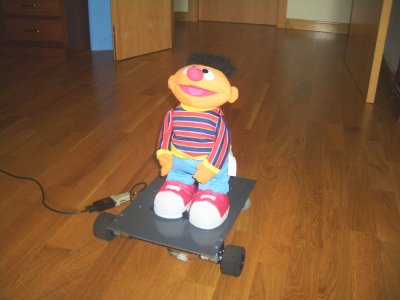
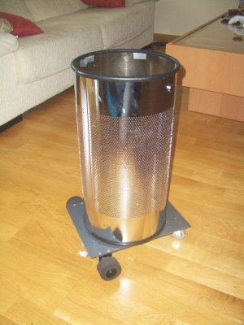

El robot FlatBot ofrece muchas posibilidades para el frikeo. La aplicación para la que fue concebido es convertir tu portátil en un robot, pero es una perfecta base móvil ;-). Ayer vino Andrés a mi casa y se trajo a FlatBot. Hicimos algunos experimentos muy interesantes:

También realizamos algunas pruebas de transporte del Robosapiens V2, que pesa 4.3Kg:


Las posibilidades son infinitas. Colocando una papelera encima podemos tener una canasta móvil 😉

En todas las pruebas estamos controlando el robot desde un portátil mediante un cable serie. Pero esto se puede hacer de manera inalámbrica por Bluetooth.
La campus está cerca… y nuestro frikismo va en aumento!!!! 😀